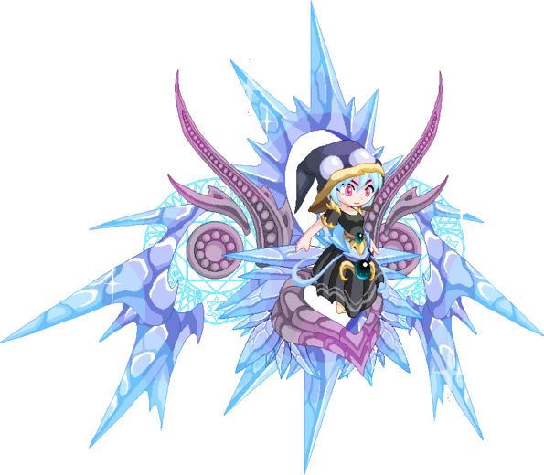

Character and Profession: Mira shade wizard
Mira Shade is an NPC (Non-Player Character) guardian/final boss of the Dark Tower in Prodigy Math Game and one of the most powerful wizards in the game.
Physical and Personality Traits:
- Ambitious and Mature
- Smart and Calculating
- long naturally blonde hair
- big purple eye

Back to Index Page